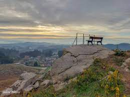

E un mirador ubicado no alto do Coto das Pías
E un dso 15 molinos en curso da auga do río Caselas, dos cales so atopasen 13 en bo estado e ben conservados
|  | |
Teñen un menu do dia que conten primer plato, segundo plato,bebida , postre e cafe por 9,00. E menu do dia con un plato e a bebida postre e cafe por 7,00€.
Especializanse en bocadillos e tapas.